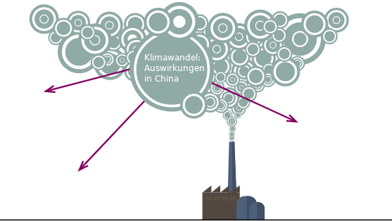

9 Klimawandel: Was tun?
Niveau A2 Sprachhandlung Meinung äußern Thema Klimawandel Grammatik weil-Nebensätze, Modalverben, Futur I
Lesen Sie den folgenden Text. Schlagen Sie unbekannte Wörter im Wörterbuch nach. Vervollständigen Sie anschließend die Sätze.
Das Klima auf der Erde wird wärmer. Wir Menschen verbrauchen zu viel Energie für Heizung, Strom und Transportmittel. Wir produzieren viele Dinge für das tägliche Leben in Fabriken. Dafür brauchen wir Energie. Für die Energie verbrennen wir Kohle, Erdgas und Erdöl. Dadurch entsteht viel Kohlenstoffdioxid (CO2). Die Abholzung der Wälder führt auch zu mehr Kohlenstoffdioxid, weil die Bäume das CO2 nicht mehr speichern. Es sammelt sich zu viel Kohlenstoffdioxid in der Atmosphäre. Von der Erde geht dadurch weniger Wärme zurück ins Weltall. Auf der Erde wird es deshalb immer wärmer. Der durch den Menschen verursachte Treibhauseffekt ist ein großes Problem.
die Energie, -n 能源 – der Strom, - 电流 – produzieren 生产 – die Fabrik, -en 工厂 – verbrennen 燃烧 – die Kohle, -n 煤炭 – das Erdgas, -e 天然气 – das Erdöl, - 石油
- Die Menschen auf der Erde verbrauchen …
- In den Fabriken produzieren wir …
- Für die Energie …
- Es entsteht zu viel …
- Auf der Erde …
Welche Auswirkungen hat der Klimawandel in China? Beraten Sie in der Gruppe und sammeln Sie Beobachtungen im Plenum.

Jeder von uns trägt ein bisschen zum Klimawandel bei. Unser Beitrag zum weltweiten CO2-Ausstoß ist unser ökologischer Fußabdruck. Ermitteln Sie Ihren persönlichen ökologischen Fußabdruck mit dem folgenden Online-Test (Fußabdrucktest). Vergleichen Sie Ihre Ergebnisse in der Gruppe. Berichten Sie Ihr Ergebnis im Plenum und erläutern Sie die wichtigsten Gründe für Ihren CO2-Ausstoß.

Mein Fußabdruck beträgt …
Ich erzeuge viel CO2 im Bereich …, weil …
Was können einzelne Menschen oder Familien gegen den Klimawandel tun? Schauen Sie sich das folgende Video über eine Familie in Deutschland an, die versucht, CO2 zu sparen. Was tun sie dafür? Sammeln Sie im Plenum (Youtube, online pCloud, lokal).
Diskutieren Sie in der Gruppe: Was können Sie tun, um Ihren ökologischen Fußabdruck zu verkleinern? Diskutieren Sie auch, was China als Land tun könnte. Teilen Sie die Ergebnisse Ihrer Diskussion im Plenum mit.
Ich persönlich denke, dass…
Ja, das stimmt.
Ich bin anderer Meinung, weil…
Ich finde, dass…, weil…
In Zukunft werde ich… / muss ich…
Meiner Meinung nach muss / soll / kann China …